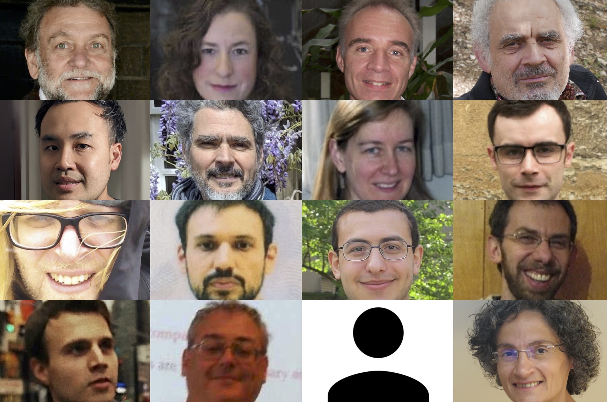

|  |
2022 Workshop on Polynomial FunctorsAt the Topos Institute and online via Zoom2022 March 14–18 (UTC) |
Participants will learn background material and hear the latest progress on polynomial functors. The main topic is the notion of polynomial functors in locally cartesian closed (LCC) categories, as employed in logic and type theory (the theme of last year's workshop). However we also include a tutorial and talks on the notion of polynomial functors in the sense of Eilenberg and Mac Lane, hoping to uncover connections between these two notions.
This is the second workshop in a series. The first Workshop on
Polynomial Functors was held in March 2021.
Zoom link and
YouTube PolyFun playlist
| ● Steve Awodey x2: |
▼ Tutorial: Polynomial functors and type theory
Abstract: This 2-lecture tutorial will explain the connection between dependent type theory and polynomial functors first explored in [1]. The first lecture presents the basic notion of a "natural model" of type theory, a functorial reformulation of the concept of a "category with families", capturing the syntax of dependent type theory. We show how the usual type theoretic rules of dependent sums and products correspond to the structure of a polynomial monad on the associated natural model, and an algebra for that monad. In part 2 we show what it means to add identity types and universes to the type theory, consider the relation between natural models and Joyal's "tribes", and state some open problems. [1] S. Awodey, Natural models of homotopy type theory, Mathematical Structures in Computer Science 28(2), pp. 241–286 (2018) |
| ● Kristine Bauer: |
▼ Categorical differentiation and Goodwillie polynomial functors
Abstract: The Eilenberg-Maclane notion of polynomial functors was used by Goodwillie to construct a tower of approximations of a homotopy functor similar to the way in which the Taylor Series provides approximations to functions of real variables. In this talk, I will explain the construction of the functor calculus tower and address the analogy with the Taylor Series by explaining how the derivative of a functor in the sense of Goodwillie is a categorical derivative. |
| ● Clemens Berger: |
▼ Goodwillie's cubical cross-effects and nilpotency in semiabelian categories
Abstract: In the original approach of Eilenberg-MacLane, polynomial functors are characterised by the vanishing of certain recursively defined cross-effects. Later on, Goodwillie uses cubical combinatorics to give a one-step definition of these cross-effects, opening thus the possibility to define polynomial functors in a non-additive setting. In this talk, I will explain how Goodwillie's cubical cross-effects lead quite naturally to an intrinsic understanding of nilpotent objects in semiabelian categories. This is based on joint work with Dominique Bourn. |
| ● Pierre-Louis Curien: |
▼ Opetopes, opetopic sets and polygraphs
Abstract: Opetopes are algebraic tree-like descriptions of shapes corresponding to compositions and coherences in higher dimensions. They were introduced by Baez and Dolan. They were later recast in the language of polynomial functors by Kock, Joyal, Batanin, and Mascari, and subsequently in a type-theoretic language by Curien, Ho Thanh and Mimram. On the other hand, polygraphs (also known as computads) are presentations of strict n- or omega-categories all the strict finite truncations of which are free in all dimensions. We will introduce both opetopes and polygraphs, and present a new, elementary, proof of the isomorphism between many-to-one polygraphs on one hand, and opetopic sets (i.e. presheaves on the category of opetopes) on the other hand. This result had been proved quite indirectly by Harnik, Makkai, and Zawadowski in 2008. A more direct proof was given by Ho Tanh in his PhD thesis (2019), with a reference to some results of Simon Henry. The new proof is entirely self-contained, and, more importantly, unveils invariants of the polygraphic syntax. |
| ● Elden Elmanto: |
▼ Bispans in algebraic geometry
Abstract: The category of bispans (a.k.a. polynomial diagrams) is to the category of commutative rings, as the category of spans is to the category of abelian groups. If one believes this, then it is not a stretch that various forms and ideas of algebraic geometry arise from and interact with the category of bispans. I will survey recent work around this idea. Original results presented are with Rune Haugseng, but other results include those of Bachmann-Hoyois and Barwick-Glasman-Mathew-Nikolaus. |
| ● Eric Finster: |
▼ Polynomial Monads and Opetopic Types in Type Theory
Abstract: I will describe how to add a definition of opetopic type to Martin-Löf type theory by rendering definitional the signature of certain polynomial monads. Moreover, I will survey some constructions which can be made in this theory and remark on the outlook for formalizing higher dimensional structures using this approach. |
| ● Marcelo Fiore: |
▼ Polynomial modelling of abstract syntax
Abstract: The abstract syntax of a formal language is the essential syntactical structure reflecting the semantic import of the language phrases. Abstract syntax has both synthetic and analytic aspects: the former concerns the constructors needed to form phrases, the latter the destructors needed to take them apart. The categorical algebraic point of view regards abstract syntax as an initial algebra: the structure map is synthetic syntax, its inverse is analytic syntax. Initiality provides compositional semantics (as the unique homomorphism to a model) by structural recursion, with an associated principle of structural induction. Specifications of language phrases are typically given syntactically by means of signatures or, more generally, typing rules. In this talk, I will explain my thesis: (i) that these are notation for polynomial diagrams, and (ii) that abstract syntax arises from the associated polynomial endofunctors by free constructions. I will do so by considering a variety of language features of increasing complexity: mono and multi sorted algebraic term structure, simple and polymorphic type structure (with variable-binding and parametrised-metavariable term structure), and cartesian and/or linear context structure. The mathematical development naturally leads to the consideration of two kinds of polynomial functors: the traditional one between slice categories, arising from locally cartesian closed structure, and another one between presheaf categories, arising from essential geometric morphisms. The former polynomial functors (and their initial algebras) have a type-theoretic rendering as indexed containers (and general trees) that is directly implementable in dependently-typed proof assistants. This is not so for the latter polynomial functors and I will present an approach to bridging this gap via adjoint modalities. |
| ● Nicola Gambino: |
▼ The matrix product of coloured symmetric sequences
Abstract: In 2008, Maia and Méndez defined the operation of arithmetic product of species of structures, extending the calculus of species of structures introduced by Joyal. In 2014, Dwyer and Hess rediscovered independently this operation in the context of symmetric sequences (as part of their work on Boardman-Vogt tensor product of bimodules) and named it matrix multiplication. In this talk, based on joint work in progress with Richard Garner and Christina Vasilakopoulou, we extend the matrix multiplication from symmetric sequences to coloured symmetric sequences and show that it determines an oplax monoidal structure on the the bicategory of coloured symmetric sequences. In order to do this, we establish general results on lifting monoidal structures to Kleisli double categories. This approach allows us to attack and solve the difficult problem of verifying the coherence conditions for a monoidal bicategory in an efficient way. |
| ● Brenda Johnson: |
▼ From polynomial functors to functor calculi
Abstract: The calculus of homotopy functors, developed by Tom Goodwillie, provides a means of constructing a Taylor-series-like tower of functors for a suitably nice functor of topological spaces. Use of this "Taylor tower" has led to significant results in homotopy theory and K-theory. Inspired by Goodwillie's construction, Kristine Bauer, Randy McCarthy and I developed an analogous functor calculus, the discrete calculus, based on the polynomial functors of Eilenberg and Mac Lane. In this talk, I will provide an introduction to these functor calculi, and discuss recent work with Kathryn Hess that sets up a general framework for constructing functor calculi. |
| ● Sean Moss: |
▼ Dependent products of polynomials
Abstract: The category of polynomial functors is cartesian closed but not locally cartesian closed. Nevertheless, Tamara von Glehn has shown that it hosts an interesting model of dependent type theory. I'll discuss this and some variations in relation to Dialectica categories. |
| ● Fredrik Nordvall Forsberg: |
▼ On the differential structure of polynomial functors
Abstract: About twenty years ago, McBride noticed a curious connection between rules for computing the type of 'one-hole contexts' for algebraic data types, and Leibniz's calculus differentiation rules: they are exactly the same! Representing algebraic data types by polynomial functors, I will explain how this is the case, and show that this notion of derivative of polynomial functors gives rise to a Cartesian differential category in the sense of Blute, Cockett and Seely. This is joint work with Conor McBride and Neil Ghani. |
| ● Exequiel Rivas: |
▼ Procontainers: a proposal from computational effects
Abstract: Computational effects such as monads (Moggi 1989) and idioms (McBride & Paterson 2008) are interpreted by functors in the semantics of programming languages, which in many interesting cases fall under the sphere of containers (or polynomial functors). Arrows (Hughes 2000) are a third connected class of computational effects, but their interpretation is in terms of profunctors rather than functors, which are outside the scope of (polynomial) functors. In this talk, we will explore a proposal for a notion of "procontainer" for capturing a class of profunctors that allows us to reflect some results from the theory of computational effects relating monads, idioms and arrows. |
| ● Brandon Shapiro: |
▼ Familial Monads for Higher and Lower Category Theory
Abstract: Familial monads, which are cartesian monads on presheaf categories whose endofunctors are parametric right adjoint (pra), provide a formalism for a class of algebraic structures that includes categories, n-categories, double categories, multicategories, bicategories, and many more algebraic higher category structures. As pra functors arise as bicomodules among polynomial functors (of the bundle variety), this suggests higher category theory has a place in the growing polynomial ecosystem. A drawback of familial monads is that they cannot model algebraic theories with strict commutativity conditions such as commutative monoids, so in this talk I'll show how they can model weak commutativity as in symmetric monoidal categories. Moreover, this construction provides a roadmap for how to encode even strict commutativity conditions in the language of polynomials. |
| ● David Spivak: |
▼ Functorial aggregation
Abstract: In this talk I'll explain how various universal operations in the (LCC) polynomial ecosystem combine to solve an applied problem: database aggregation. In particular, we will see that the category of comonoids and bicomodules in Poly has a coclosure operation as well as a local monoidal closed structure. Using these, we'll see how the seemingly atomic operation of transposing a span, or taking the opposite of a category, is actually a composite of two more primitive universal operations: a local dual and an adjoint. The ability of the polynomial ecosystem to so articulately carve nature at its joints seems to be necessary for defining the deceptively simple idea of database aggregation, which can be roughly understood as "integrating along compact fibers". |
| ● Paul Taylor: |
▼ The Berry Order (Ideas from 1980s stable domain theory)
Abstract: Besides Joyal's "species", the influences on work akin to polynomial functors in the 1980s were Diers' "multiadjoints", Berry's initial investigations of "sequential programs" and Girard's adaptation of this to the semantics of "System F". Using Berry's term "stable domain theory", Lamarche and I constructed numerous cartesian closed (bi)categories of categories and pullback-preserving functors, looking for better models of polymorphism. In these, the order between maps is not pointwise but the "Berry order"; for categories the naturality squares must be pullbacks, so these were called "cartesian transformations". The function-spaces turn out to have a simpler representation than in "Scott" domain theory. This uses what Berry and Girard called the "trace", which consists of the multiple universal (unit) maps from Diers' theory, which I called "candidates". The one theorem that I shall prove is that the trace provides a factorisation system for stable functors. The "epis" are functors with (single) left adjoints and the "monos" are those which are equivalences on slices. The latter are essentially fibrations whose fibres are groupoids. The different "flavours" of stable domains are measured by the properties of their slices (including familiar notions from categorical logic for no obvious reason) and the complexity of the "multicolimits" - both their cardinality and the kinds of groups that are involved. A lot of this material was not written up properly, so there there is a goldmine waiting for younger researchers to develop. For example, Gabriel-Ulmer duality between LFP and lex categories can be extended to "disjunctive" theories. Also, the similarity between (bi)categories of domains and the domains themselves that was used to model System F might be adapted to finding models of univalence in HoTT. |
| ● Todd Trimble: |
▼ Notions of functor for Poly
Abstract: Fundamental concepts in category theory tend to be expressible in terms of other basic concepts. Categories, for instance, can be seen as monads in spans, or as polynomial comonads, or as simplicial sets satisfying Segal conditions, and so on. The notion of functor similarly enjoys this sort of kaleidoscopic display. In this talk, we will consider functors from various points of view and tailor them to Poly. The tools we use, such as monadicity theorems and allied results, are rather basic, and we hope accessible to a wide audience. |
| ● Christine Vespa x3: |
▼ Tutorial: Eilenberg-Mac Lane polynomial functors
Abstract: This 3-lecture tutorial is an introduction to the notion of polynomial functors, introduced by Eilenberg and Mac Lane in 1954 as a generalization of additive functors. This notion applies directly to functors from a monoidal category, in which the unit is a zero object, to an abelian category. In these lectures, I will introduce equivalent definitions of polynomial functors and give several examples. After that, I will present some structure results and an overview of applications and other developments. |
Anyone interested in participating is welcome; an online registration form is now available. A zoom link will be sent out to registered participants a few hours before the workshop.
For other questions, please contact David Spivak or Joachim Kock.14:00–18:00 UTC
Japan 23:00–03:00 (+1); Central Europe 15:00–19:00; UK 14:00–18:00; US East Coast 10:00–14:00; US West Coast 07:00–11:00.
| Time (UTC) | Monday, 3/14 | Tuesday, 15 | Wednesday, 16 | Thursday, 17 | Friday, 18 |
|---|---|---|---|---|---|
| 14:00–15:00 | Awodey 1 | Awodey 2 | Shapiro | Berger | Elmanto |
| 15:00–16:00 | Vespa 1 | Vespa 2 | Vespa 3 | Bauer | Spivak |
| 16:00–17:00 | Trimble | Gambino | Fiore | Moss | Rivas |
| 17:00–18:00 | Nordvall F. | Johnson | Finster | Taylor | Curien |